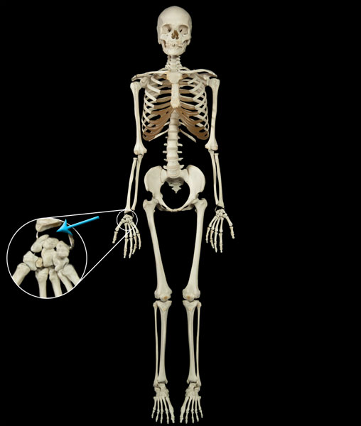

Ellipsoid (Condyloid) Joints
Ellipsoid joints (also known as condyloid joints) are a special type of ball and socket joint in which the ball joint more closely resembles an oval than a sphere. Ellipsoid joint range of motion is much more restricted than that of a typical ball and socket joint. This results in a biaxial classification. Some examples of Ellipsoid joints include the Radiocarpal joint of the wrist, the Metatarsophalangeal joint between the metatarsals and the phalanges, and the Metacarpophalangeal joint between the metacarpals and the phalanges.
